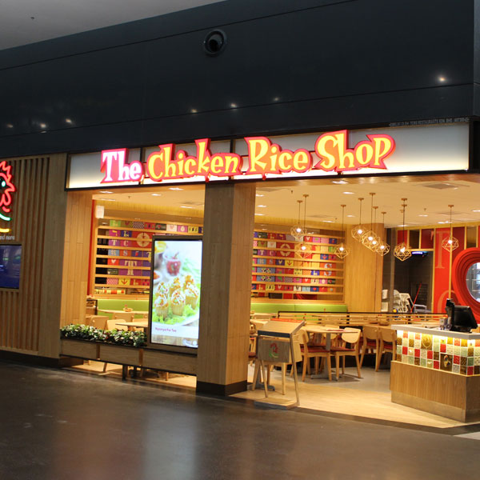
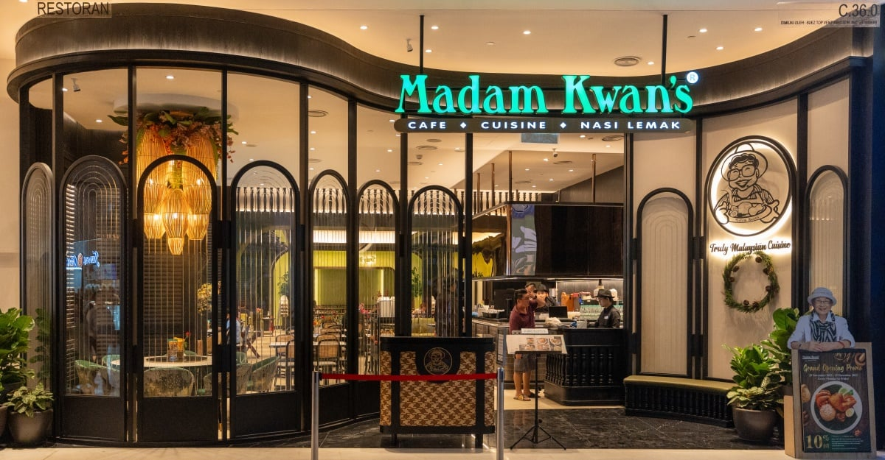

AUNTEA JENNY is the number one brand in northern China and ranks among the top three mid-priced freshly brewed tea brands in China. It focuses on providing consumers with high-value, healthy freshly brewed tea drinks. As of May 9, 2024, AUNTEA JENNY has opened over 8,000 stores in more than 300 cities across China and overseas markets such as Malaysia.
Chicken rice is what they do best! While it may sound simple, chicken rice is a complex dish that is packed with flavor and a must try in Malaysia
At Madam Kwan's, we take pride in serving you the very essence of Malaysia on a plate. Our journey started with Kwan Swee Lian, a devoted enthusiast who fell in love with the diverse and exciting flavors of Malaysia.
